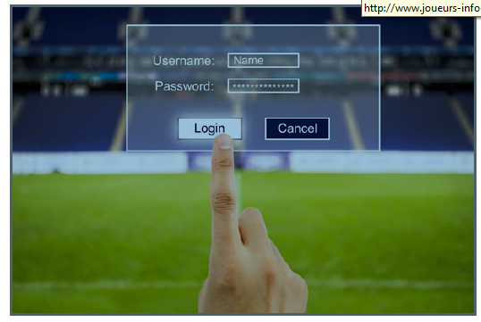

Astuces du Parieur
Apprendre à parier en ligne
Avant de vous lancer tête baissée dans l’aventure des paris, il est nécessaire de savoir
commentparier en ligne
. Pour cela, vous devez connaitre le vocabulaire du pari en ligne en comprenant ceque sont
les cotes
, le
bankroll
ou
les différents types de paris
.
Les cotes
sont fixées par les bookmakers et il s’agit du coefficient de gain potentiel en fonction devotre mise. Prenons l’exemple d’un match de foot
Milan A.C
–
A.S Roma
avec les cotes suivantes :1.50 pour une victoire du
Milan A.C
, 3 pour un match nul, 2.7 pour une victoire de la
Roma
.
Si vous misez 10 euros sur une victoire de Milan, vous remporterez 10 x 1.5 soit 15 euros. (Lebénéfice sera donc de 5 euros)
En misant sur un match nul, vous récolterez 10 x 3 soit 30 euros. (Le bénéfice sera ici de 20euros)
Si vous pariez sur une victoire de la Roma, vous obtiendrez 10 x 2.7 soit 27 euros. (Le bénéficesera de 17 euros).
C’est la base du pari sportif. De plus,
votre
Bankroll
correspond à votre budget consacré aux parissportifs. Le plus sage est de définir en amont ce que vous êtes prêts à jouer, sur une périodedonnée (un mois, un an, etc.)
Enfin, il faut savoir que vous pouvez parier sur de nombreux éléments. Il existe des paris simple,des paris multiples (pour lesquels vous devrez valider l’ensemble de vos prévisions pour empocherdes gains) ou des paris en direct (avec des cotes qui évoluent en fonction du déroulement d’unmatch).
Une fois que vous avez choisi
le type de pari
, il vous reste à définir sur quoi vous voulez parier : lescore exact (nombre de points inscrits), le résultat final (victoire de xxx, nul, défaite), l’écart depoints, le nom des buteurs, ou d’autres variantes plus ou moins précises proposées par les sites deparis en ligne. Sachez que certains sites proposent des paris extra sportifs par moment, liés àl’actualité : qui sera le prochain coach
d’Arsenal
? Dans quelle
équipe nba
jouera
Lebron James
l’année prochaine ?
Une fois que vous avez assimilé ces données, vous êtes prêts pour parier en ligne. Voici nosrecommandations.
Quand vous pariez en ligne,
les transactions sur les sites de paris sportifs sont surveillées
etsoumises à des contrôles précis.
l’ARJEL
, l’Autorité de Régulation de Jeux En Ligne, régule le bonfonctionnement de ces entités de manière indépendante et sous contrôle de l’Etat Français. Ainsi,vos données personnelles et votre argent sont protégées. Nous vous déconseillons de parier surdes sites qui ne sont pas validés par l’ARJEL. Vous pouvez vérifier la validité d’un site en bas depage, ou vous verrez apparaitre
Agréé ARJEL
ainsi qu’un numéro de licence.
Le risque majeur des paris en ligne est
l’addiction
que peut engendrer cette activité. En gagnant,vous souhaiterez gagner plus, en perdant vous souhaiterez renflouer votre
bankroll
, parfois c’estjuste le plaisir de jouer qui prend le dessus. Attention donc. Nous vous invitons à consulter le
joueurinfo service
pour toute information relative à ces addictions.

L’inscription sur les sites de paris en ligne
S’inscrire sur les sites de paris en ligne n’est pas compliqué, mais c’est soumis à
certaines règles
.Ainsi, votre seule adresse email ne sera pas suffisante et il vous faudra fournir également une pièce d’identité ainsi qu’un RIB pour valider votre inscription.
- Renseignez vos coordonnées personnelles
- Certains sites vous demanderont également de fixer vos propres limites de paris. Soyezraisonnable et choisissez un montant en accord avec votre budget.
- Insérez vos coordonnées bancaires.
- Faites un dépôt qui sera votre
bankroll
. Vous ne pourrez pas parier sans ce premier versement,même dans le cas des offres bonus proposées par les sites (
100 euros offerts sur tel ou telmatch
)
- Envoyez vos documents justificatifs (document d’identité et RIB), par mail, courrier ou vial’interface du site. Cette dernière méthode est la plus commode.
Vous recevrez ensuite votre code confidentiel qui vous permettra de commencer à parier en ligne.
Quelles sont les précautions à prendre ?
Pour parier en ligne, il est utile de prendre
quelques précautions
afin que cette activité reste unplaisir, qui vous rapportera potentiellement de l’argent.On vous conseille d’ouvrir un compte bancaire dédié à ces paris, pour pouvoir gérer votre budget
au mieux. De plus, il peut être intéressant de s’inscrire sur plusieurs sites de paris en ligne, pour
multiplier vos gains et profiter des différences de cotes entre les sites.
Enfin, ne pariez pas avec le coeur, mais bien avec la tête. Les pronostics et les statistiques vous
aideront plus que votre passion pour une équipe. Rappelez-vous que les paris sportifs sont un
mélange de chance, d’expérience du pari et de connaissance d’un ou plusieurs sports. Avec le
temps, vos gains seront plus grands puisque vous maîtriserez le système de paris. Débutez donc
calmement, en misant peu, pour vous faire la main !